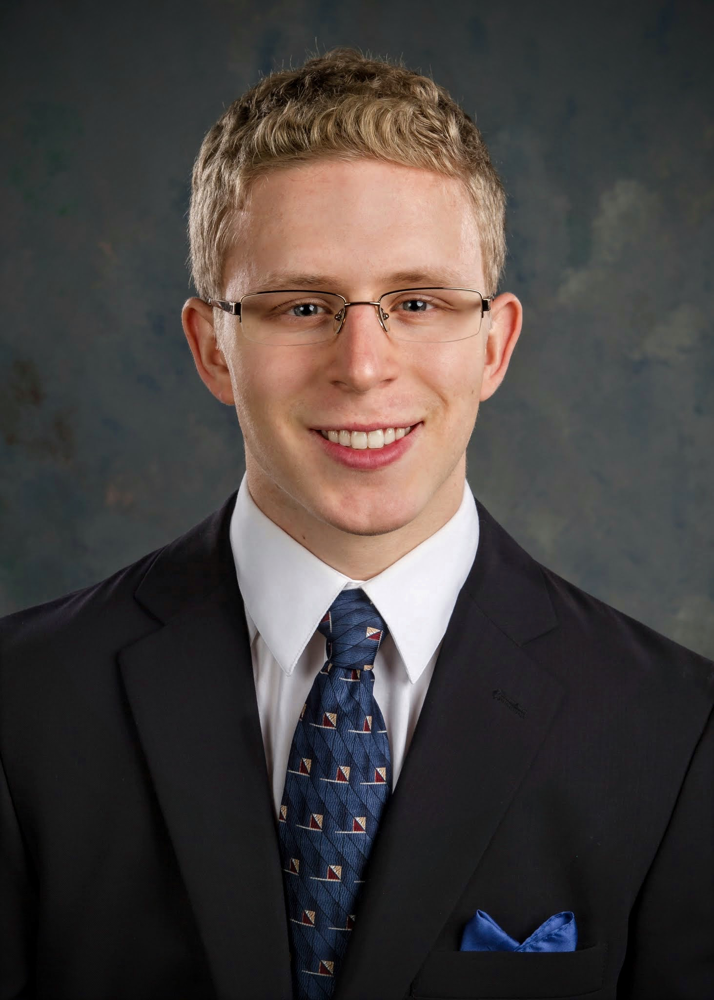

|
 |
Audrow Nash
PhD student, University of Southern California
Podcast Director, Robohub
Contact
CV
Interviews
|
About
I am a PhD student in Computer Science at the University of Southern California.
I am part of Maja Matarić's Interaction Lab, which focuses on socially assistive robotics.
I received my Master's and Bachelor's Degrees in Electrical Engineering from the University of Michigan and UNC Charlotte, respectively.
Publications
-
Learning Stable and Energetically Economical Walking with RAMone.
Nash, A., Chen, Y., Smit-Anseeuw, N., Zaytsev, P., Remy, D.
International Conference on Intelligent Robots and Systems 2017.
Presented poster at the Planning Legged and Aerial Locomotion with Dynamic Motion Primitives workshop.
[.pdf]
-
Establishing and Maintaining Formations of Mini Quadrotors.
Nash, A., Massey, T., Wesley, C., Kosanam, S., Conrad, J.
International Conference on Informatics in Control, Automation and Robotics 2014.
Presented poster during the main conference.
-
Towards Establishing and Maintaining Autonomous Quadrotor Formations.
Nash, A., Engel, C., Conrad, J.
SouthEastCon 2014. Gave a talk during the main conference.
Select Interviews
Select Awards
- National Science Foundation (NSF) Graduate Fellowship, 2016 (article)
- Charlotte Research Scholars Research Scholarship, 2013